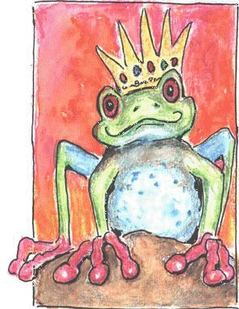

A Letter Inquiring About Millie From Prince Phillipe

The Royal Portrait
The following
is a letter recently received by my human/mother. If anyone knows the
whereabouts of the Prince, please contact me. I'd like to meet him! ( Millie)
My Dear Millie's mother,
Do let me introduce myself. I am Prince Phillipe of Redfoot Towne of the Rain Forest. I was surfing the net and came upon the most magnificent female red eyed orange footed amphibian I ever laid my red eyes on! I have, as you might imagine, seen many of these marvelous specimens, but this one-Oh my! Such beauty and intelligence. Not to mention personality! I don't know if there would ever be a chance I would meet her but I send my portrait and to tell you of my riches to properly care for this treasure. I did so have to convey to her my admiration for her loveliness.
In Awe,
Prince Phillipe